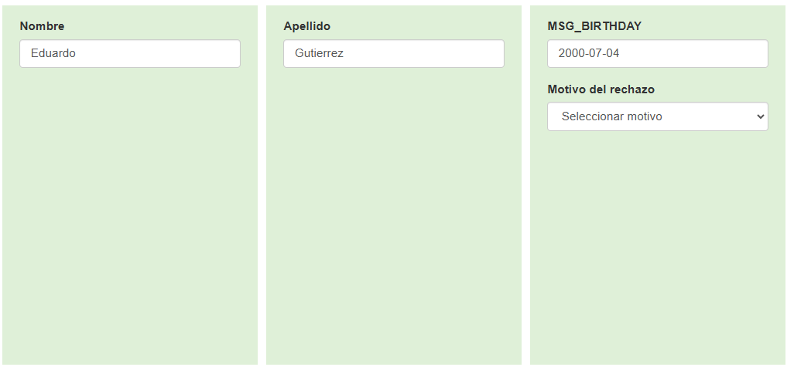

Abrir el sistema WD 1.0 y seleccionar el apartado Verificación en linea, luego seleccionar el país a verificar (Peru).
*Open the WD 1.0 system and select the "Online Verification" section, then select the country to be verified (Peru).*
*Abrir o sistema WD 1.0 e selecionar a seção "Verificação Online", depois selecionar o país a ser verificado (Peru).*
Seleccionar el ID del Transporte la modalidad "Repartidor en moto" como ejemplo. Verificar que en el estatus este marcada la opción "En verificación" y luego dar click en el botón Buscar.
*Select the "Repartidor en moto" transport ID as an example. Verify that the "State" option is "En verificación" and then click the "Buscar" button.*
*Selecionar o ID de Transporte da modalidade "Entregador de moto" como exemplo. Verificar se o status está marcado como "Em verificação" e depois clicar no botão "Buscar".*
Se mostrarán los resultados de la búsqueda. Al final de cada fila, hay un enlace que dice "Revisar". Al hacer clic en este enlace, serás redirigido a la solicitud del conductor.
*The search results will be displayed. At the end of each row, there is a "Revisar" link. Clicking this link will redirect you to the driver's application.*
*Os resultados da busca serão exibidos. No final de cada linha, há um link que diz "Revisar". Ao clicar neste link, você será redirecionado para a solicitação do motorista.*
Verificar la barra superior (verde significa que se puede trabajar, rojo significa que alguien más está en ella). Revisar el número de teléfono: la lada debe ser 51 (Perú). Si la lada no coincide, la solicitud debe ser rechazada.
*Check the top bar (green means it's available to work on, red means someone else is on it). Check the phone number: the area code must be 51 (Peru). If the area code does not match, the application must be rejected.*
*Verificar a barra superior (verde significa que pode ser trabalhado, vermelho significa que outra pessoa está nela). Verificar o número de telefone: o DDD deve ser 51 (Peru). Se o DDD não coincidir, a solicitação deve ser rejeitada.*
Cada documento tiene un menú desplegable con opciones para rechazar por un motivo específico. Al pasar el cursor sobre una imagen, se ampliará; también puedes hacer clic en "Editar" para girar o recortar la foto.
*Each document has a dropdown menu with options to reject for a specific reason. Hovering over an image will enlarge it; you can also click "Edit" to rotate or crop the photo.*
*Cada documento tem um menu suspenso com opções para rejeitar por um motivo específico. Ao passar o cursor sobre uma imagem, ela será ampliada; você também pode clicar em "Editar" para girar ou cortar a foto.*

Revisar la foto de perfil. Debe ser una foto reciente, sin filtros, el rostro debe ser completo y claro. Se aceptan gorras si la frente y las cejas son visibles. No se acepta vestimenta militar, fotos con cigarrillos/bebidas ni en blanco y negro.
*Review the profile photo. It must be a recent photo, without filters, and the face must be complete and clear. Hats are accepted if the forehead and eyebrows are visible. Military attire, photos with cigarettes/drinks, or black and white photos are not accepted.*
*Revisar a foto de perfil. Deve ser uma foto recente, sem filtros, o rosto deve ser completo e claro. Bonés são aceitos se a testa e as sobrancelhas estiverem visíveis. Não são aceitas vestimentas militares, fotos com cigarros/bebidas ou em preto e branco.*
Revisar y corregir el nombre, los apellidos y la fecha de nacimiento para que coincidan con el documento de identidad. Si tiene dos nombres o dos apellidos, se deben capturar ambos.
*Review and correct the first name, last name(s), and date of birth to match the ID document. If there are two names or two last names, both must be captured.*
*Revisar e corrigir o nome, os sobrenomes e a data de nascimento para que coincidam com o documento de identidade. Se tiver dois nomes ou dois sobrenomes, ambos devem ser capturados.*
Revisar el número de placa. Debe contener solo números y letras, sin símbolos como guiones, puntos o espacios. Si los tiene, deben ser borrados.
*Review the license plate number. It should contain only numbers and letters, without symbols like hyphens, periods, or spaces. If any are present, they must be deleted.*
*Revisar o número da placa. Deve conter apenas números e letras, sem símbolos como hífens, pontos ou espaços. Se os tiver, devem ser apagados.*
Revisar la foto de confirmación de identidad. El conductor debe sostener su licencia de conducir vigente. La cara y el documento deben ser claramente visibles. No se aceptan ediciones ni copias, a excepción de documentos digitales.
*Review the identity confirmation photo. The driver must be holding their current driver's license. The face and the document must be clearly visible. Edits and copies are not accepted, with the exception of digital documents.*
*Revisar a foto de confirmação de identidade. O motorista deve segurar sua carteira de motorista válida. O rosto e o documento devem ser claramente visíveis. Edições e cópias não são aceitas, com exceção de documentos digitais.*
Revisar el número de licencia/identificación. Si es licencia, capturar tal cual (con guiones/letras). Si es cédula, capturar solo el número. El documento debe estar vigente, legible y sin ediciones. En Lima se requiere licencia de conducir, en otras ciudades la cédula de identidad.
*Review the license/ID number. If it's a license, capture it exactly as it appears (with hyphens/letters). If it's an ID, capture only the number. The document must be current, legible, and unedited. In Lima, a driver's license is required; in other cities, an ID card is sufficient.*
*Revisar o número da licença/identificação. Se for licença, capturar tal qual (com hífens/letras). Se for cédula, capturar apenas o número. O documento deve estar vigente, legível e sem edições. Em Lima é exigida carteira de motorista, em outras cidades a cédula de identidade.*
El año de fabricación del vehículo es opcional pero se recomienda poner el año en curso. Para “repartidor en moto” la marca debe ser “MOTORBIKE”. Para “repartidor en auto” la marca es “MOTORBIKE” pero se busca el modelo y el color se deja tal cual.
*The vehicle's year of manufacture is optional but the current year is recommended. For "repartidor en moto," the brand must be "MOTORBIKE." For "repartidor en auto," the brand is "MOTORBIKE," but you must search for the car model and leave the color as is.*
*O ano de fabricação do veículo é opcional, mas recomenda-se colocar o ano corrente. Para "entregador de moto", a marca deve ser "MOTORBIKE". Para "entregador de carro", a marca é "MOTORBIKE", mas você deve procurar o modelo e a cor é mantida como está.*
Revisar los antecedentes penales. Hay 4 tipos y se aceptan capturas de pantalla de otras apps. Estos documentos tienen un año de vigencia a partir de su fecha de expedición.
*Review the criminal background certificate. There are 4 types and screenshots from other apps are accepted. These documents are valid for one year from their date of issue.*
*Revisar os antecedentes criminais. Existem 4 tipos e capturas de tela de outros aplicativos são aceitas. Esses documentos têm validade de um ano a partir da data de expedição.*

En casos de suplantación de identidad o incumplimiento de requisitos, seleccionar los motivos de rechazo comunes al final del formulario. Se pueden seleccionar motivos específicos para cada documento y un motivo general.
*In cases of identity theft or non-compliance with requirements, select the common rejection reasons at the end of the form. Specific reasons can be selected for each document and a general reason can be chosen.*
*Em casos de suplantacão de identidade ou descumprimento de requisitos, selecionar os motivos de rejeição comuns no final do formulário. Podem ser selecionados motivos específicos para cada documento e um motivo geral.*

Una vez aceptada o rechazada la cuenta, la página debe cambiar de estado. Si la página no cambia y aparece un recuadro rojo de cuentas duplicadas, el equipo no trabajará en esa solicitud.
*Once the account is accepted or rejected, the page status should change. If the page doesn't change and a red box for duplicate accounts appears, the team will not work on that application.*
*Uma vez aceita ou rejeitada a conta, a página deve mudar de status. Se a página não mudar e aparecer um quadro vermelho de contas duplicadas, a equipe não trabalhará nessa solicitação.*